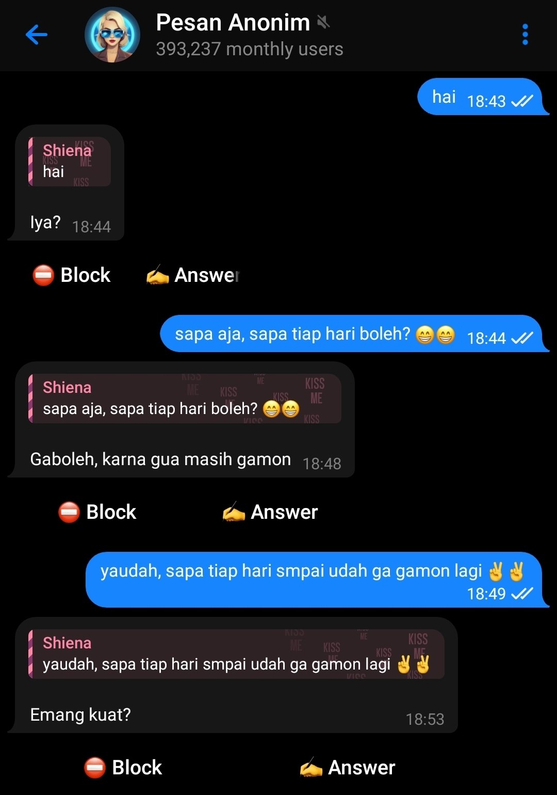
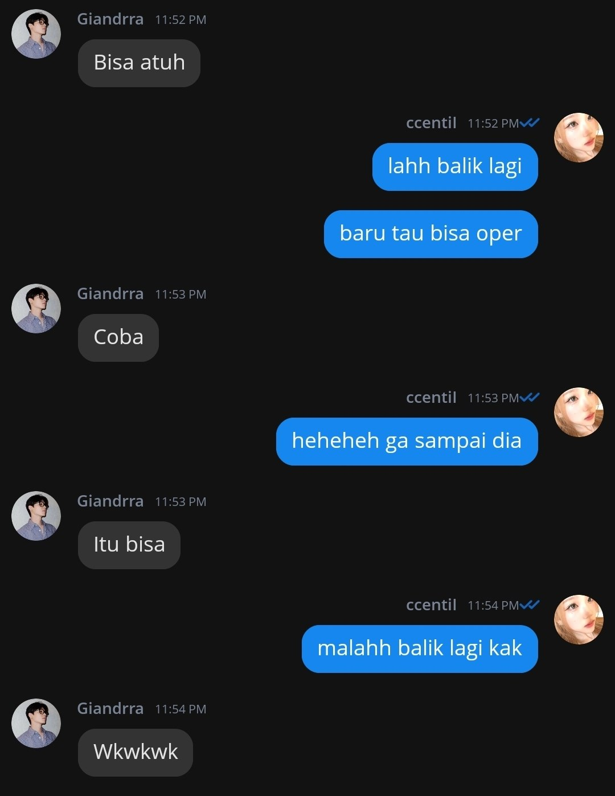
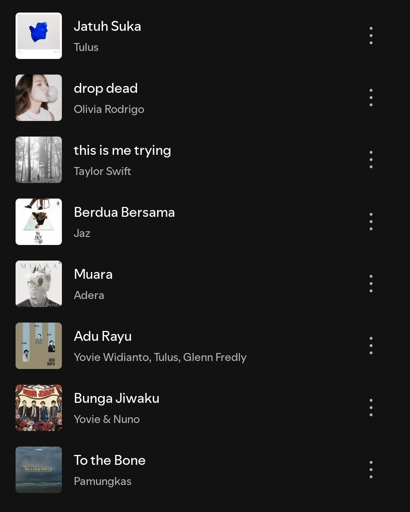
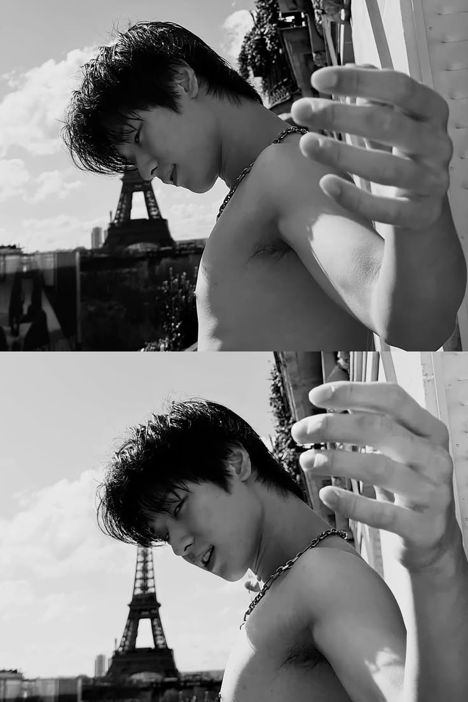

Happy Birthday, Kak Khaze!🎂
Untuk teman yang paling luar biasa, Kak Kazhe ✨
Kenangan & Doa Terindah

First Chat☕our first chat: aku beraniin say hi ke kakak di anon kalau kata olivia sih ini feminine intuition hehehe

Kegiatan Fav 🌅kegiatan yang paling aku suka banreng kak kazhe : mabar plato (soalnya kakak jadi ekspresif & kita bisa random talk tipis")

Song 🧁lagu yang bikin inget kak khaze

Moment fav 🧁moment" fav: aku suka pas kak khaze narsis aslinya wkwkwk lucu, terus suka respon kakak kalau aku katain wibu, kakak jarang respon jokes & gombalan ak sih tapi gatau kenapa tetap lucu aja deh meskipun diam 👍👍
Satu Hal Yang Ingin Aku Sampaikan 🤍
Surat ini mungkin berisi hal-hal yang belum sempat aku ucapkan secara langsung.
Klik amplop di bawah ini untuk membaca suratnya...
Halo, surat ini spesial karena isinya adalah segala hal yang pengen banget aku utarain ke kakak, hehe.
Aku tau kak, mungkin sekarang memang waktunya belum tepat kalau aku berusaha masuk ke kehidupan kakak. Aku paham kalau mungkin kakak masih ingin menikmati momen dan kenangan bersama mantan kakak, dan belum ingin terburu-buru menghapus semua itu.
Tapi kak, aku di sini sama sekali nggak menuntut kakak buat menghapus perasaan atau kenangan tersebut. Kakak bebas merasakan apapun yang memang masih ingin kakak rasakan, bebas menyayangi mantan kakak sebesar apa pun itu. Aku nggak akan pernah jadi penghalang untuk hal tersebut.
Aku cuma akan berusaha sebisa dan sejauh yang kakak izinkan. Aku berusaha bukan dengan harapan kakak akan segera melupakan mantan kakak, tapi karena aku ingin kakak tahu kalau aku ada di sini.
Aku hanya sedang berusaha agar keberadaanku disadari oleh kakak, tanpa menuntut apa pun, tanpa memaksa perasaan kakak, dan tanpa mengharapkan balasan tertentu.
Apapun respon kakak terhadap segala usahaku, aku akan menerimanya. Kalau suatu saat kakak merasa caraku hadir di sisi kakak terlalu berlebihan, bilang saja. Aku akan menyesuaikan diri dengan cara yang paling nyaman untuk kakak.
Kalau menghubungi kakak setiap hari terasa memberatkan, aku akan belajar untuk tetap ada di sisi kakak dengan cara yang lain. Dengan cara yang lebih tenang. Dengan cara yang tidak menggebu-gebu.
Jadi untuk sekarang, cukup jalani kehidupan kakak seperti biasanya.
Dan kalau suatu hari kakak merasa membutuhkan seseorang untuk ada di sisi kakak, atau ketika kakak sudah selesai dengan segala hal yang mungkin sedang kakak coba selesaikan, kakak boleh datang ke aku.
Aku akan tetap ada di sini.
Dan aku akan menunggu, selama aku masih mampu.
Terima kasih sudah hadir di hidup banyak orang dengan versi terbaik dirimu. Dan terima kasih karena tanpa sadar, kamu juga berhasil membuat bulan Juni terasa lebih spesial untukku.